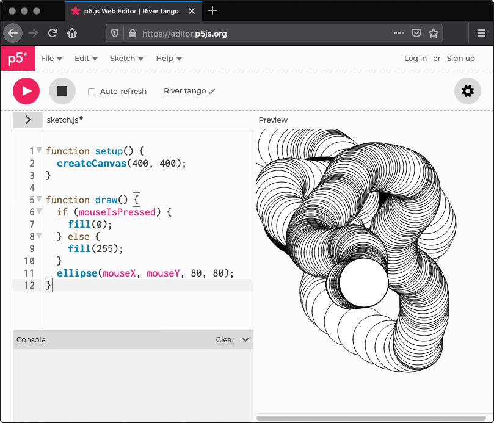
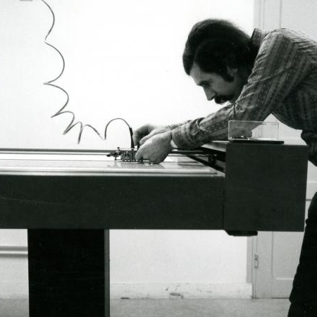
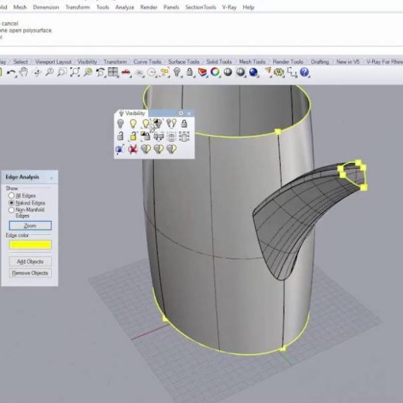

Computational Fabrication
Blair Subbaraman
Machine Agency, University of Washington
Slides: rb.gy/lgxu6r
Hi! I'm Blair. I worked at REMAP for a couple years from 2018-2020, where Jeff welcomed me into the world of theater despite my not knowing anything. Since then, I started a PhD at the Unviersity of Washington, where I'm now in my 4th year in the department of Human-Centered Design & Engineering. I'm going to present on some of my own research as it relates to digital & computational fabrication, or broadly, the process of making physical things with machines. In particular, I'll talk about connecting coding interfaces and computational fabrication tools as a way to broaden participation in both physical and digital production.
Key Takeaways
- Seamless experiences aren't always better
And as I share some of these projects, I hope to convince you of a couple key ideas. The first is that in building computational tools for fabrication, the goal doesn't need to be an end-to-end seamless experience, at least not at first. There's this idea in popular culture as well as in research that we're working towards a sort of star trek Replicator type application, where matter is automatically compiled into fully working objects. While I admit this seems pretty cool, I think the reality is that there are too many niches of possible users of computational fabrication to
cater to them all with a single tool. And in fact, I think that overly focusing on interfaces in which you just press 'start' is really limiting in how we can employ fabrication in new & exciting ways. Part of what I'm interested in is how we can reduce the threshold for users to modify and make seamless experiences for their unique use case.
Key Takeaways
- Seamless experiences aren't always better
- It matters who is using the tool, and how
To that point, taking into account who is using the tool and why is a productive way to build new computational fabrication systems. The needs of someone designing electronic circuits and, say, a ceramicist wanting to 3D print with clay are quite different, and each person brings with them unique existing expertise. Accounting for and incorporating these differences can lead to divergent fabrication machines and interfaces.
Maybe these takeaways lack context for now, but I'll try to hammer them home and bring some nuance to them as they come up over the course of this talk.
I wante to start with a briefly historical anecdote. This is a snippet from a documentary by IBM in the 1970s. It shows the work process of Manfred Mohr, a German artist who was a part of the first wave of artists who gained access to computers to make visual art. Here we see him programming, which at that time was not done at a screen but rather with pen and paper, making flowcharts and then creating physical punched cards which were read by the computer. We then see Mohr walk to a separate area and sit down at this screen. This isn't actually a computer, which were still the size of entire rooms, but it's just a screen that displays the results of a computers calculation. We can see the output of Mohr's program begin to appear, which is showing various rotations of a cube. At this stage, Mohr can decide if he likes the results, or if he'd like to go back and edit the program to make something different. If it passes his scrutiny, then the piece can be physically drawn using a pen plotter. This is a drawing machine that can move left, right, up, and down around a flat surface. Both the computer and the plotter were, at the time, an expensive resource, so the stakes are pretty high here to create something you actually liked.
Computation & Fabrication, Then & Now
Punching computer cards

Creating visuals with code
I show this clip to bring some historical depth to our conversation around both computation & fabrication. This era was very 'fabrication first' in a sense, since there were limited graphical output options. These pen plotters are arguably some of the first digital fabrication machines being used in an artistic or design process. I want to compare Mohr's work process with how we might work today to make the same piece. With respect to computation, obviously a lot has changed, and how we interact with computers has changed drastically. If we were making Mohr's piece today, we could write code to immediately see results on our laptops and quickly make small, iterative changes to get the output we liked. And, there wouldn't necessarily be a pressure to physically draw what we make, beacuse we could much more easily share the image, or better yet, the code itself.
Computation & Fabrication, Then & Now
Punching computer cards

Changing plotter pens
Creating visuals with code
Plotter images shared on Twitter
With respect to fabrication, there's also some major differences. Tabletop plotters are widely available for personal use, along with a host of other machines like 3D printers and laser cutters. In this sense, fabrication is more accessible today; but part of what I want to emphasize today is that this is only one limited dimension of accessibility. If we look at Mohr's interaction with the plotter, it's actually pretty similar to today. In Mohr's case, the computer wrote the data on a magnetic tape which was then connected to the plotter to execute. If we were fabricating something today, we would generate machine instructions on our laptops, put the file on an SD card, and then plug it into the machine to execute. Past a few dialog boxes and number sliders, we don't have much of a say in what the machine does, nor can we change the machine's behaviour, after pressing start.
Research Context
"Harnessing the precision of machines for the creativity of individuals"
Twigg-Smith et al.
Tran O'Leary et al.
The lab I'm in, called Machine Agency, does research around topics like digital fabrication, small-scale automation, and open source communities, and is broadly summarized by the tagline, "harnessing the precision of machines for the creativity of individuals". The research takes several forms, from qualitative investigations into how digital fabrication tools are used in the real-world, to building systems, and I want to provide a bit of context here on the sorts of things we've worked on in the past and where I'm coming from.
Research Context
"Harnessing the precision of machines for the creativity of individuals"
Twigg-Smith et al.
Tran O'Leary et al.
So for example, a labmate of mine, Hannah, looked at the artwork and processes that were being shared on Twitter under the hashtag 'PlotterTwitter', which is a pretty cool hashtag to check out if you've not seen it before. And a lot of what is being shared and discussed in these spaces are things like, trying different types of pens, or different types of paper, to get interesting results, and the sorts of things that are shared between users are tips and hacks to use the plotter in unintended ways. This goes back to the idea that a seamless experience with a machine isn't always better.
Research Context
"Harnessing the precision of machines for the creativity of individuals"
Twigg-Smith et al.
Tran O'Leary et al.
Another lab member, Jasper, has been working on an augmented reality interface for CNC milling. So here we can see the outline of the object that he is going to cut is projected down onto the material to be able to confirm the setup before actually cutting anything out.
How can we support domain experts to creatively engage computer controlled machines?
For my own part in all of this, my research laregly focuses on how we can support artists, scientists, and other pracitioners who are already experts in their field to creatively engage computer controlled machines. Machines like 3D printers, laser cutters, and mills are becoming increasingly cheaper and widespread--I'll bet there's a makerspace in walking distance of your classroom right now full of these machines--but the ways we are made to use them are too often prescriptive, limiting our creative possibilities. I try to investigate this question at a couple of different levels in my work. This includes staging systems interventions for use in the real-world, as well as understanding the behaviour of existing communities to ground the development of future systems.
Overview
Computational Fabrication
Creative Code
p5.fab
Creative Automation
To this end, in this talk I want to introduce two areas of physical and digital practice--computational fabrication and creative code--and then talk about two projects which intersect these practices.
Overview
Creative Code
p5.fab
Creative Automation
First, I'll introduce some core ideas and practices of computational fabrication--and then I'll immediately complicate these core assumptions that are baked into existing software. In particular, I want to show how software tools for fabrication are meant create a physical part that is as faithful to the digital model as possible, which can become disconnected from exploring physical properties of materials.
Then, I'll jump from physical practice to digital practice to introduce creative coding, which is broadly the process of programming for expressive over functional purposes. Since Manfred Mohr's time, artists have developed many software tools to tailored to their creative pursuits. Put in conversation with digital fabrication practice, we can start to see opportunities for new sorts of fabrication interfaces.
Overview
Computational Fabrication
Creative Code
p5.fab
Creative Automation
Following some of these insights, I'll talk about a couple of systems that I've worked on. p5.fab is a javascript library which supports control of digital fabrication machines from a creative coding environment; I'll introduce the tool and discuss some reactions from artists who tested the system;
Overview
Computational Fabrication
Creative Code
p5.fab
Creative Automation
and finally, I'll briefly talk about a laboratory automation system developed for plant biologists to think about how alternative machine interfaces might be of interest across domains. While this example is related to science, the point here is more in generalizing a bit from computational fabrication of individual artifacts to creatively employing automation.
Computational Fab, Creative Code
So, we'll start in the world of digital fabrication, peppering in some insights & takeaways from prior qualitative research along the way.
Definitions
Using Grasshopper3D for computational design
Digital fabrication with a 3D printer
A computationally fabricated lamp from Nervous System
Before diving into the nitty-gritty of digital fabrication, I'll untangle the terms 'computational design', 'digital fabrication', and 'computational fabrication'. Computational design can refer to a whole range of design practices that incorporate computational processes. This involves the use of programing to do things like create and modify form and structure, but computational design isn't so much one specific technical skill as way to design rule sets which produce multiple outcomes.
Digital fabrication is a manufacturing process where a machine is controlled by a computer. Common digital fabrication machines today are 3D printers, laser cutters, and mills; increasingly, these machines are available to hobbyists, or are are made available in community contexts like MakerSpaces.
Computational fabrication, then, is more or less chaining together of computational design and digital fabrication. It integrates programming, design, and digital fabrication to design forms then construct these forms using fabrication machines.
Fabrication, Big & Small
Research Pavilion, University of Stuttgart
Kinematic Dress, Nervous System
The principles of computational design can be combined with different machines to create objects across a range of scales, from the architectural to the tabletop. The left image here shows a robot arm constructing a computationally generated pavilion at the University of Stuttgart; on the right is the Kinematic Dress from the design studio Nervous system, where they came up simulation techniques to take a large 3D thing, a dress, and fold & flatten it into something that can be 3d printed in one piece.
A Usual 3D Printing Workflow

Computer Aided Design (CAD)
Computer Aided Manufacturing (CAM)
Computer Numeric Control (CNC)
Let's take 3D printing as an example to understand a usual fabrication workflow. First, you need to design a model to print. This is typically done in computer aided design or a similar environment; maybe people have used on of these before, and common examples are Rhino3D, Blender, or SolidWorks. Then, we need to use this geometry to plan the machines toolpaths, or the path it will take as it moves through space. This is done by importing the model in a computer-aided manufacturing, or CAM, software. For 3D printing, this is called the slicer, as it is intended to divide a model into a series of contours to be printed layer-by-layer. The slicer will produce machine instructions called g-code, or geometry code, which can be exectued on the machine.
A Unusual 3D Printing Workflow
Tactum , Gannon et al.
It's worth noting that prior work has taken issue with this workflow, especially around the modeling stage. As an example of this, here's a system called Tactum, intended to create 3D printed wearables directly on your body. They project the design directly onto your arm and you can manipulate the geometry with gestures to see what it will look like before 3D printing it.
Promise vs. Practice
Expected fabrication outcome based on model
Actual outcome from 3D printing (from r/FixMyPrint )
But even with new and intuitive modeling techniques, things often don't go as planned when you go to physicall manufacture something. There will often be problems with the geometry, and there are a bunch of physical constraints like not being to print models with sharp angles because each layer needs to be supported from underneath. And unlike Mohr's plotter that we saw earlier, which was maintained in a well-funded laboratory by a group of technicians, most people 3D printing today are using them in their homes or studios.The workflow we saw assumes that machines will obediently execute exactly what we tell it to, but that isn't always the case. We see then this kind of glaring disconnect between digital tools and the physical process of fabrication.
Promise vs. Practice
Physicalizing audio data in custom sculptural
forms
These problems become particularly acute in computational fabrication processes. This is an example from a past project I worked on, where a group of designers wanted to use audio data to drive the generation of clay sculptural forms. The raw data is used to start a digital simulation, and the resulting 3D form is printed using a clay 3D printer. The successful integration of computational methods and physical manufacturing here is dependent on establishing correspondences between digital instructions and physical outcomes, but these connections aren't well mapped. Most of the work here was in testing and tuning the simulation so that the resulting model was both printable and legible for their specific context. These software-driven fabrication workflows really require extensive software testing, tweaking, and optimization in response to machine and material behavior.
Promise vs. Practice
Models are saved as stls, which are just lists of triangles
Machine instructions are saved as g-code
And briefly, this disconnect between digital and physical reality extends all the way to the underlying representation of digital models. When you make a model in CAD, or find one online, the standard file format is an stl. This is just a list of triangles that define the boundary surface of your model; these triangles can be bigger or smaller depending on how detailed you model is and the resolution of whateve machine you're using. However, this isn't a very expressive file format; as we can increasingly print with more than one material, or muliple colors, there's no way to represent what's happening inside the object, which depending on the application can be just as important as the exterior. And g-code, which are the instructions that are sent to the machine, are basically just a list of coordinates to move to at a certain speed. Again, this language makes a lot of assumptions on what it is you want to do with the machine. There's no clean ways to, say, incorporate sensor data which can affect the machines motion at run-time.
Practitioners negotiate digital software with physical practice .
The end result is that pracitioners are made to reconcile digital software with a fundamentally physical practice. Crossing the digital/physical divide remains challenging, especially when developing products with novel materials, forms, or manufacturing contexts.
Practitioners negotiate digital software with physical practice .
How can we support a wider range of interactions with the machine?
From a systems design perspective, this analysis prompts us to think about how we can support a wider range of interactions with the machine, particularly ones that shifts our focus from the screen to the machine.
I want to put a pin in our conversation about digital fabrication for a second, and jump to a primarily digital practice, creative coding. If you're unfamiliar with creative coding, it might look something like this. Creative coders create programs, called sketches, that generate visual output. The mission of these tools is broadly to make sketching with code as intuitive as sketching with a pen and paper. In this video, I'm editing a sketch posted to the website OpenProcessing. We can see that the effects of editing existing parameters in code can immediately be seen by running the sketch. Here, I'm editing the number of sides of a polygon and the number of bumps which are animated within it.
------------
I could then choose to publish my edits as a new sketch; this repurposing of an existing artifact into something new is called remixing.
------------
Remixing facilitates this sort of iteration on existing code, but we have yet to understand how creative coders use remixing in practice. Moreover, given the focus on expressivity over functionality, we suspect that code reuse in creative coding is distinct from other programming contexts.
Creative Coding
Open Source Software Tools for the Arts
Li et al.
There are lots of creative coding toolkits and libraries out there; some popular ones include p5.js, Processing, and OpenFrameworks. UCLA is actually a hub for development of these tools and communities, with Lauren McCarthy and Casey Reas in Design Media Arts being the creators of p5.js and Processing respectively. These tools have been developed by artists in alignment with their creative goals to overcome the limitations of the software available to them. They're are used by very large and active communities; p5.js, for example, is used by an estimated 10 million global users, for use in educational contexts through critically acclaimed artworks. Previous research has argued for pairing art production with tool production to foster broader participation in creative system development, and has investigated the software development practices of artists to guide technical collaborations.
Connecting Creative Code & Digital Fabrication
BASIC code to control a plotter, 1964. Form and Code , Reas & McWilliams
function draw() {
let sideLength = 10;
for (let x = 0; x <= 90; x += 10) {
for (let y = 0; y <= 90; y += 10) {
rect(x, y, sideLength, sideLength);
}
}
}
Drawing a grid of squares with p5.js, 2023
These tools have come a long way from the programming tools that we saw Manfred Mohr was using for his plotter. You don't need to be a software engineer or have years computer science education in order to make what you want anymore. I would say that digital fabrication tools are currently in a place not unlike 1980s computer art in this regard, in that unless you're an expert dedicated to building new fabrication worklows, you're more or less stuck trying to bend the current tools and their resulting look & aesthetic.
Connecting Creative Code & Digital Fabrication
Current model representations in CAD and CAM
Direct toolpath design with p5.fab
So what might be gain from collapsing current CAD and CAM approaches to directly specify machine toolpaths? How does a programmatic representation and approach to computational fabrication change the sorts of interactions and artifacts we can create?
p5.fab
Bridging Creative Code & Digital Fabrication
To investigate this question, I worked on p5.fab, which is a javascript library to control fabrication machines from the creative coding environment p5.js
p5.fab tries to speak to the apparent tension between the precision & accuracy of machines like 3D printers, and the messy embodied practices which surround them. The video here shows a 3D printer whirring around-- plastic filament is melted in the hotend shown here, which is then extruded through the nozzle. We're printing these freehanging extrusions of a single line width across overextruded dots. This wouldn't be possible to print with off-the-shelf software for 3D printing, which is instead really good at optimizing the path the machine should take based on a digital model. In contrast, the printing the object shown here requires manual tuning to negotatiate speed, acceleration, and the amount of filament that's extruded. This requires testing and observing material behavior rather than reasoning about in a modeling file.
The idea is directly control the machine programatticaly to iteratively observe material outcomes. We can compose prints with methods like this-- the base fab object represents the machine, and carries machine data like the nozzle and filament radius, and size of the machine.
If we want to move to a position without depositing material, we can move retract, which will pull filament away from the nozzle to prevent unwanted oozing. Then we can move to an (x,y,z) coordinate on the bed.
For examnple, if we want to move to the center of the bed, we can access the machine's maxX and maxY properties.
We can print filament with the move extrude command. Here we might also specify a speed and specific extrusion amount. We provide access to other sorts of commands like this,
and together they help us quickly build up 3 dimensional shapes, and specify interesting geometry.
So for example, here's the editor-- we could open the Lissajous curve example, and visualize the toolpaths by changing some values
and the idea is to make things plug-n-play, so we connect the computer over wired usb to the printer and then can start streaming commands immediately to the printer
Motion Attribute Control
Velocity painting with p5.fab
A printed cube with a checkered surface
To have finer-grain control compared to standard tools, it's important to be able to not just specify geometry, but to have lower level control over how the extruder is moving between those points. In the print shown here we use an approach called “velocity painting” to add a checkered pattern to one face of a cube. By speeding up or slowing down the print, the printer will deposit slightly different amounts of filament, leaving a visible texture on the exterior.
As I've been trying to demonstrate so far, fine-grain toolpath control coupled with iterative material exploration can be leveraged for expressive gain. We print a series of structures which explore toolpath geometry, motion, and extrusion. We reached each of these designs through a process of material exploration of various machine parameters. By tapping in to craft sensibilities fundamental to 3D printing practice, the goal is to encourage the operator to physically engage with the material and machine.
For example, we can craft curved toolpaths which move off of the X-Y plane. Here, a sinusoidal toolpath allows filament to coil repeatedly and naturally. This produces a textured surface finish. Importantly, we can continuously manipulate extrusion amount, height, speed, and more in code to explore different material outcomes.
We also used the system to create unique interface. Normally, printing software will assume that you're printing on an unaltered, flat surface. We used p5.fab to design a workflow to print directly onto an existing object elevated from the print bed. As an example, here we’re printing a decorative handle onto a cup. I'm aligning the nozzle to the desired position using a controls interface and incrementally lowering the nozzle until it just touches a piece of paper. We choose two points on the cup which define the handle endpoints and the precise geometry is generated on the fly, using the selected positions from the real world to set handle’s length.
Moving to a programming environment means we can use other existing libraries and resources to build up interactive machine interfaces. Here's a quick example where I've connected a MIDI controller to be able to modify print speed and extrusion parameters in real-time-ish. So different knobs are mapped to different values in code, and we can tune prints as they're running. As we zoom in here, you'll see the printer slow down and start to drop filament from a height. This example uses a MIDI controller, but we could just as easily start to integrate computer vision or other sensor data to drive the machine.
Tensions & Opportunities in Building Community
We tested p5.fab in two workshops; first with 3 professional artists working with code, and then with 3 makers experienced with 3D printing. Across both our workshops, we found productive tensions and intersections between creative coding & 3D printing workflows. For example, the artists found waiting for a model to print much slower than their usual digital processes, even as makers found sending commands straight to the machine to be much faster than reverting to CAD and CAM software. What I also found interesting was how p5.fab made experts out of begginers and beginners out of experts. For example, the artists had never 3D printed and were able to immediately design & print complicated geometry. On the other hand, makers with minimal programming experience had to get a handle on coding, but were able to use the machine as a physical debugging platform to test their code.
Tensions & Opportunities in Building Community
As someone who considers 3D printing to be a bit daunting (CAD software always seems like a huge barrier to entry), it was so liberating to just get direct control of the machine. The layers of abstraction that CAD/slicer software add are really boring to me, so not having to deal with that is so fun...
I really liked this quote from one of the artist participants, who said ~quote~
So, this was a real goal of the system; not to instantly make super fancy and slick artifacts, but to invite broader participation in digital fabrication. Going forward, I'm excited about the opportunities write and share code to create physical artifacts,
From Fabrication to Automation
but I want to transition here to show how these sorts of alternative machine interfaces can support the development of new workflows and experiences across domains.
Automation as a Tool for Creative Exploration
Two Circles , Madeline Gannon
And, similar to how creative code uses code as a creative medium, what I'm interested in with p5.fab and beyond is how we can sort of lift automation out of it's industrial legacies to build tools for creative exploration. This is a project from the designer Madeline Gannon called two circles-- it's a 2 meter googley eye attached to a 10,000 pound industrial robot, not unlike the robot arm I showed earlier for making architectural scale pavilions. There's a depth sensor here tracking people's positions, and the robot is programmed to inquisitively lean in when you do, and run away if you try to touch it. This sort of straightforward repurposing of the robot arm totally throws to the wind the conventional workflows for using these machines in pursuit of a more interactive experience.
Automation as a Tool for Creative Exploration
Choreorobotics , Madeline Gannon
Madeline is now working on a toolkit to control cable robots from the creative coding toolkit OpenFrameworks. Again, repurposing these robots for use in a very different context, here as a sort of room-scale installation, totally flips the way that we think about controlling these machines. Rather than coming up with a single design that's going to be run over and over again, we now want to be able to rapidly change and edit what the machine is doing.
Automation as a Tool for Creative Exploration
Choreorobotics , Madeline Gannon
requires...
Modular, Low-cost, Extensible Hardware
Human-centered Systems for Controlling Machines
This picture of automation requires some distinct infrastructure. First, niche applications require niche tools, we can't take advantage of high volume sales & production to offset costs. Instead, we need modular, low-cost, and extensible hardware to customize one-off applications.
And after we build a machine, we need good ways of actually running it. Following the same line of thought as p5.fab or Madeline's robots here, we can think about writing code which generates machine instructions to allow reusability and flexibility running machines.
Modular, Low-cost, Extensible Hardware
Open-source design for distributed manufacturing
Jubilee: tool-changing machine
Design for precise, repeatable positioning
To the first point, this is Jubilee; a multi-tool changing platform previously developed in our lab. Jubilee looks like a conventional 3D printer- it has a carriage that can move around in the x-y plane, and the bed can move up and down. It's interior volume is 300x300x300mm. It also has the ability to automatically pick up and change tools. That's shown on the right, where we see the carriage features this twist lock shaft. Each tool has a matching wedge plate, and the shaft can engage the tool and twist to lock it. By virtue of some clever mechanical design, these pickups are repeatable, so every time we grab a tool we can be sure its in the same place.
Jubilee is fully open-source, and designed to be fabricatable. This means it is made with parts that are readily available, or made with readily available tools & equipment, and there are at least 170 Jubilees in the world which we know of that have been independentely built.
Modular, Low-cost, Extensible Hardware
Digital fabrication of modular and customizable hardware
gigapan microscopy
multi-tool processes
Jubilee's tool-changing ability allows us to build up multi-tool processes. We can park multiple tools on Jubilee, and change between them as the machine runs. This allows us to build custom tools. Take this microscope tool shown here for example-- it's almost entirely 3D printed, with a few standard screws and the like thrown in. In terms of electronics, Jubilee features both control boards for motion planning and controlling things like motors, as well as a Raspberry Pi, which if you've not heard of is a cheap computer. This means we can plug this USB microscope in to the Raspberry Pi to take & analyze images while moving it around.
Modular, Low-cost, Extensible Hardware
Multi-tool processes
Multi-color plotting
Multi-color printing
Here's a couple examples of Jubilee being used, on the left to plot in multiple colors, and on the right the result of a multi-color print. These are both satisfying examples of using existing software with the machine, but they're still largely constrained by the usual digital fabrication steps we talked about earlier.
A real advantage of Jubilee, though, is in being able to create any custom tool you want.
Automation as a Tool for Creative Exploration
In my own work, we've been thinking about automation in scientific contexts.
For science, creative automation might look something like this: defining an experiment up front in a way that accommodates niche experimental design; being able to compile that experiment to instructions which can
be run on a machine-- and maybe this requires physically configuring the machine for your custom applicatio-- and finally collecting data, where the operator--the scientist in this case-- can have some role to play at runtime.
Now, I'm taking a brief detour into science, but the interest here is in how we can provide flexible infrastructure to build, customize, and run machines across a range of applications. Even though the application here is scientific exploration, I think there are some key insights here which are generalizable across other contexts.
Programmatic Control
m = Machine()
m.tool_change(syringe)
m.move_to(x=media_reservoir.x, y=media_reservoir.y)
syringe.aspirate(mL=20)
well = well_plate("A1")
m.move_to(x=well.x, y=well.y)
syringe.dispense(mL=1.5)
To that end, we can take a similar approach to p5.fab to control the machine.Here we're connecting to the machine and specify a certain tool to pick up-- we see the bed automatically dropping down
to accommodate the size of the syringe here. Then we can navigate over top a reservoir placed on the machine and aspirate a certain volume of media. Then, we can move to a specific well to dispense.
Programmatic Control
By running code in a Jupyter notebook,
we can control the machine + tools in new ways
The commands I just showed are being executed from a Jupyter notebook; if you haven't heard of Jupyter notebooks, it's a document where you can write and run small chunks of code and also write plain text notes. They're pretty common in data science, but they haven't really been used to control machines; we're pretty excited about how computational notebooks can faciliate iterative and exploratory machine control. We've been building up a library of tools paired with controls software to integrate while the machine is running; for example, this video on the right shows the machine picking up a camera tool. We can take advantage of some simple computer vision to identify the plants in the image, and differentially manipulate samples depending on, say, how big or healthy the plants are.
Heterogeneous Processes
Liquid tranfser
Duckweed manipulation
Image collection
We used our duckbot to automate experiments, from computational design tools to plan experiements, through machine execution, and subsequent data analysis...
Heterogeneous Processes
and, I know we've taken a bit of a scientific tangent here, but I want to take a moment to compare this to the usual digital fabrication workflow we saw earlier. Rather than one overarching pipeline from digital production to physical production, with Jubilee computational design and machine control are interwoven at each step of the process. And where before we were modeling and fabricating individual artiftacts, now we're stringing together complex workflows.
Going forward, I think systems like p5.fab or the Duckbot are just the beginning of an emerging paradigm to control fabrication machines using literate programs.
Mohr changing plotter pens
Jubilee changing tools
And as a parting thought, I just want you to prompt you to think about the sorts of things that Manfred Mohr could make with his plotter, versus the sorts of things we can make with 3D printers now, versus what we can make with machines like Jubilee and tools like p5.fab. And, in tandem with the technical infrastructure that we've been talking about, this sort of work implies a whole host of social infrastructure, like: how to share workflows rather than files, how to version control physical processes, and more.
Key Takeaways
- Seamless experiences aren't always better
- It matters who is using the tool, and how
Coming back to the original goals I set out for this talk, we're equipped to take stock and bring a bit more nuance to the original takeaways.
Key Takeaways
- Seamless experiences aren't always better,
Tools that help practitioners navigate the physical/digital divide can expand the design space of computational fabrication.
- It matters who is using the tool, and how.
I claimed that seamless experiences aren't always better, and through systems like p5.fab I tried to show how tools which help users navigate the physical/digital divide, rather than render it invisible, can expand the design space of computational fabrication. This isn't so much a claim against a seamless user experience, so much as an argument for the development of tools which allow users to make their own seamless experiences.
Key Takeaways
- Seamless experiences aren't always better
Tools that help practitioners navigate the physical/digital divide can expand the design space of computational fabrication.
- It matters who is using the tool, and how
Acounting for unique user expertise can inform new approaches to machine design and control.
I also claimed that it matters who is using the tool, and how. For both p5.fab and the duckbot, grounding system development in actual practice leads to different fabrication interfaces. A computational notebook or a creative coding environment is a far cry from usual computer aided design software; as we engage more practitioners from different backgrounds, I think we can expect correspondingly diverse approaches to machine design and control.
Computational Fabrication
Blair Subbaraman
Machine Agency, University of Washington
Slides: rb.gy/lgxu6r
blahblahblair.com
I'll stop there, and I'm interested in questions or comments that people have.